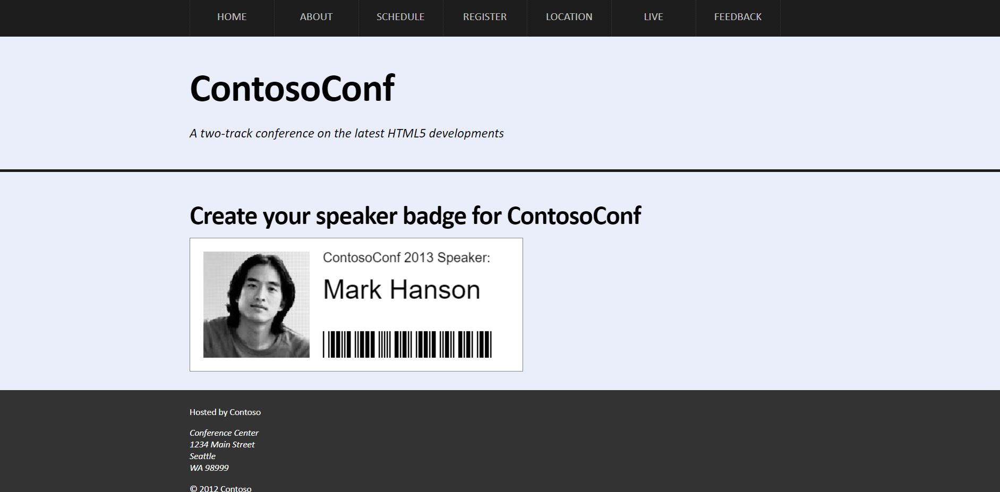
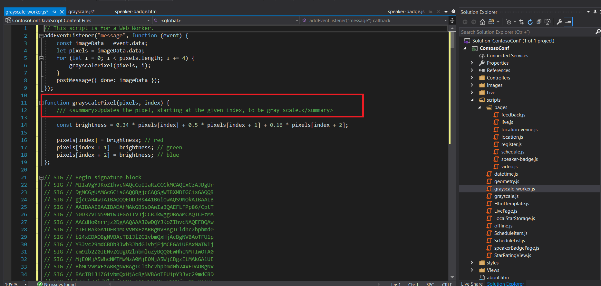
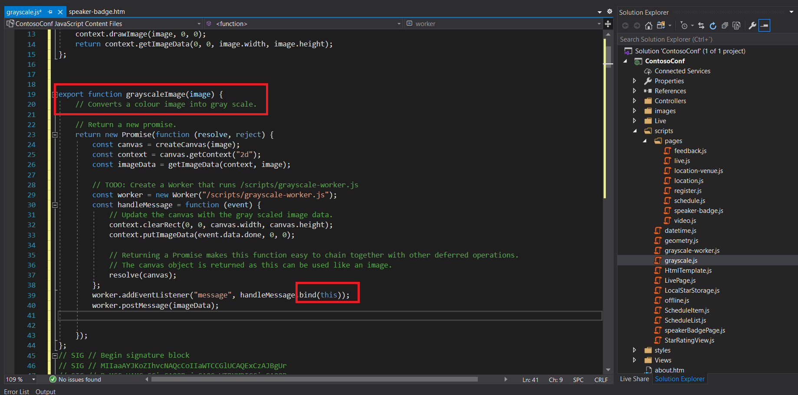

Module 14: Performing Background Processing by Using Web Workers
Lesson 2: Performing Asynchronous Processing by Using Web Workers
Demonstration: Creating a Web Worker Process
Start without debugging and drag "mark-hanson-large.jpg" to Internet Explorer
and drop it on the canvas with the label "Drag your profile photo here".

In "Solution Explorer", expand the "ContosoConf" project, expand the "scripts" folder,
and then double-click "grayscale-worker.js".
In the "Code Editor" window, explain that the event handler at the top of the file waits for a message
containing a color image. The event handler then calls the "grayscalePixel()" function to convert each pixel
in the image to grayscale, and then posts a message with that grayscale image data.

In "Solution Explorer", double-click "grayscale.js".
In the "Code Editor" window, find the "grayscaleImage()" function. Explain that this
function creates a web worker that runs the "grayscale-worker.js" script, and posts a
message to the web worker that contains the data for the image that the user dropped onto
the canvas on the form. This function also arranges to catch the message that the web worker
posts back, containing the grayscale version of the image, which is displayed on the canvas on the web page.
Point out that the code that sets up the message handler for the web worker uses "bind(this)" to ensure
that the anonymous function that handles the event is resolved to the web page and not the web worker variable.
